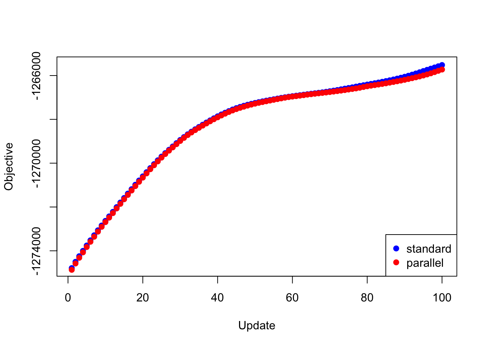

Parallel backfitting updates
Jason Willwerscheid
8/12/2018
Last updated: 2018-08-15
workflowr checks: (Click a bullet for more information)-
✔ R Markdown file: up-to-date
Great! Since the R Markdown file has been committed to the Git repository, you know the exact version of the code that produced these results.
-
✔ Environment: empty
Great job! The global environment was empty. Objects defined in the global environment can affect the analysis in your R Markdown file in unknown ways. For reproduciblity it’s best to always run the code in an empty environment.
-
✔ Seed:
set.seed(20180714)The command
set.seed(20180714)was run prior to running the code in the R Markdown file. Setting a seed ensures that any results that rely on randomness, e.g. subsampling or permutations, are reproducible. -
✔ Session information: recorded
Great job! Recording the operating system, R version, and package versions is critical for reproducibility.
-
Great! You are using Git for version control. Tracking code development and connecting the code version to the results is critical for reproducibility. The version displayed above was the version of the Git repository at the time these results were generated.✔ Repository version: 86ef31a
Note that you need to be careful to ensure that all relevant files for the analysis have been committed to Git prior to generating the results (you can usewflow_publishorwflow_git_commit). workflowr only checks the R Markdown file, but you know if there are other scripts or data files that it depends on. Below is the status of the Git repository when the results were generated:
Note that any generated files, e.g. HTML, png, CSS, etc., are not included in this status report because it is ok for generated content to have uncommitted changes.Ignored files: Ignored: .DS_Store Ignored: .Rhistory Ignored: .Rproj.user/ Ignored: docs/.DS_Store Ignored: docs/figure/.DS_Store Untracked files: Untracked: analysis/parallel2.Rmd Untracked: data/greedy19.rds Untracked: data/parallel/MASHvFLASHbad.rds Untracked: data/parallel/MASHvFLASHfinal.rds Untracked: data/parallel/MASHvFLASHfinal_bad.rds Untracked: data/parallel/MASHvFLASHrandom.rds Untracked: data/parallel/MASHvFLASHrandom_bad.rds Unstaged changes: Modified: code/parallel_test.R Modified: data/parallel/greedy20niter100.rds Modified: data/parallel/svd20niter100.rds
Expand here to see past versions:
| File | Version | Author | Date | Message |
|---|---|---|---|---|
| html | 5a2e2a9 | Jason Willwerscheid | 2018-08-12 | Build site. |
| Rmd | 6a9bf1c | Jason Willwerscheid | 2018-08-12 | wflow_publish(c(“analysis/index.Rmd”, “analysis/parallel.Rmd”)) |
| html | 9246c68 | Jason Willwerscheid | 2018-08-12 | Build site. |
| Rmd | eaba09b | Jason Willwerscheid | 2018-08-12 | wflow_publish(c(“analysis/index.Rmd”, “analysis/parallel.Rmd”)) |
Introduction
At present, backfitting is done serially. That is, factor 1 is updated using the current residuals, then factor 2 is updated using the new values of factor 1 to calculate residuals, and so on.
Here I implement parallel updates, where all factors are updated using the same residuals. Parallelization could provide a significant speedup, but the objective is no longer guaranteed to increase after each iteration.
For the code used in this investigation, see below.
Experiments
I carry out two experiments, using the same GTEx dataset that I use here. The first experiment adds 20 factors to a flash object using flash_add_greedy and then backfits for 100 iterations. The second adds 20 factors using flash_add_factors_from_data (with init_fn = udv_svd) and then backfits (again, for 100 iterations).
In each case, I use three methods to backfit:
The standard method implemented in
flash_backfit, which serially updates each factor by callingflash_update_single_fl.A “parallelized” method that peforms simultaneous updates via
lapply.A multi-core method that performs simultaneous updates using function
mclapplyin packageparallel(I am using 4 cores).
I compare objectives attained after each update and time required to carry out each update.
Results
I pre-run the experiments and load the results from file.
res_greedy <- readRDS("./data/parallel/greedy20niter100.rds")
res_svd <- readRDS("./data/parallel/svd20niter100.rds")Greedy
First I give results for backfitting the 20 factors obtained using flash_add_greedy.
The objectives attained using each backfitting method are very similar (the objectives for the lapply and mclapply methods are of course identical, so I only give “standard” and “parallel” results below):
plot(res_greedy$backfit_obj, pch=19, col="blue",
xlim=c(1, 100), xlab="Update", ylab="Objective")
points(res_greedy$parallel_obj, pch=19, col="red")
legend("bottomright", legend=c("standard", "parallel"),
pch=c(19, 19), col=c("blue", "red"))
Expand here to see past versions of greedy_obj1-1.png:
| Version | Author | Date |
|---|---|---|
| 9246c68 | Jason Willwerscheid | 2018-08-12 |
Plotting the same results as the difference in objective attained (i.e., the improvement in the objective if one uses the standard method rather than a parallel method):
y <- res_greedy$backfit_obj - res_greedy$parallel_obj
plot(1:length(y), y, type="l", xlim=c(1, 100), ylim=c(0, max(y)),
xlab="Update", ylab="Difference")Expand here to see past versions of greedy_obj2-1.png:
| Version | Author | Date |
|---|---|---|
| 9246c68 | Jason Willwerscheid | 2018-08-12 |
The time required for each update is as follows. Interestingly, simply using lapply achieves a minor speedup. Using 4 cores cuts the time required to backfit approximately in half.
data <- data.frame(standard = res_greedy$backfit_t,
lapply = res_greedy$parallel_t,
mclapply = res_greedy$multicore_t)
boxplot(data, ylim=c(0, max(data)), ylab="Time per iter (s)")Expand here to see past versions of greedy_t1-1.png:
| Version | Author | Date |
|---|---|---|
| 9246c68 | Jason Willwerscheid | 2018-08-12 |
The total time required (in seconds) is:
colSums(data)standard lapply mclapply
657.796 447.641 318.600 SVD
Next I give results for the 20 factors obtained using flash_add_factors_from_data. In this case, the parallel updates attain a better objective than the standard updates after 80 iterations or so:
plot(res_svd$backfit_obj, pch=19, col="blue",
xlim=c(1, 100), xlab="Update", ylab="Objective")
points(res_svd$parallel_obj, pch=19, col="red")
legend("bottomright", legend=c("standard", "parallel"),
pch=c(19, 19), col=c("blue", "red"))Expand here to see past versions of svd_obj1-1.png:
| Version | Author | Date |
|---|---|---|
| 9246c68 | Jason Willwerscheid | 2018-08-12 |
y <- res_svd$backfit_obj - res_svd$parallel_obj
plot(1:length(y), y, type="l", xlim=c(1, 100), ylim=c(min(y), max(y)),
xlab="Update", ylab="Difference")Expand here to see past versions of svd_obj2-1.png:
| Version | Author | Date |
|---|---|---|
| 9246c68 | Jason Willwerscheid | 2018-08-12 |
data <- data.frame(standard = res_svd$backfit_t,
lapply = res_svd$parallel_t,
mclapply = res_svd$multicore_t)
boxplot(data, ylim=c(0, max(data)), ylab="Time per iter (s)")
Expand here to see past versions of svd_t1-1.png:
| Version | Author | Date |
|---|---|---|
| 9246c68 | Jason Willwerscheid | 2018-08-12 |
The total time required (in seconds) is:
colSums(data)standard lapply mclapply
584.846 446.226 328.599 Code
…for the parallel updates…
flash_update_fl_parallel = function(data,
f,
kset,
var_type,
ebnm_fn_l,
ebnm_param_l,
ebnm_fn_f,
ebnm_param_f,
parallel_fn) {
f = flash_update_precision(data, f, var_type)
f = flash_update_loadings_parallel(data,
f,
kset,
ebnm_fn_l,
ebnm_param_l,
parallel_fn)
f = flash_update_factors_parallel(data,
f,
kset,
ebnm_fn_f,
ebnm_param_f,
parallel_fn)
}
flash_update_loadings_parallel = function(data,
f,
kset,
ebnm_fn,
ebnm_param,
parallel_fn) {
R = flash_get_R(data, f)
subset = !f$fixl
update_fn = function(k) {
Rk = R + outer(f$EL[, k], f$EF[, k])
calc_update_vals(data,
f,
k,
which(subset[, k]),
ebnm_fn[[k]],
ebnm_param[[k]],
loadings = TRUE,
Rk)
}
res = parallel_fn(as.list(kset), update_fn)
# Deal with "failed" updates:
null_idx = which(sapply(res, is.null))
if (length(null_idx) > 0) {
res = res[-null_idx]
kset = kset[-null_idx]
}
subset[, -kset] = FALSE
f$EL[subset] = unlist(lapply(res, function(k) {k$EX}))
f$EL2[subset] = unlist(lapply(res, function(k) {k$EX2}))
f$ebnm_fn_l[kset] = ebnm_fn[kset]
f$ebnm_param_l[kset] = ebnm_param[kset]
f$gl[kset] = lapply(res, function(k) {k$g})
f$KL_l[kset] = lapply(res, function(k) {k$KL})
return(f)
}
flash_update_factors_parallel = function(data,
f,
kset,
ebnm_fn,
ebnm_param,
parallel_fn) {
R = flash_get_R(data, f)
subset = !f$fixf
update_fn = function(k) {
Rk = R + outer(f$EL[, k], f$EF[, k])
calc_update_vals(data,
f,
k,
which(subset[, k]),
ebnm_fn[[k]],
ebnm_param[[k]],
loadings = FALSE,
Rk)
}
res = parallel_fn(as.list(kset), update_fn)
# Deal with "failed" updates:
null_idx = which(sapply(res, is.null))
if (length(null_idx) > 0) {
res = res[-null_idx]
kset = kset[-null_idx]
}
subset[, -kset] = FALSE
f$EF[subset] = unlist(lapply(res, function(k) {k$EX}))
f$EF2[subset] = unlist(lapply(res, function(k) {k$EX2}))
f$ebnm_fn_f[kset] = ebnm_fn[kset]
f$ebnm_param_f[kset] = ebnm_param[kset]
f$gf[kset] = lapply(res, function(k) {k$g})
f$KL_f[kset] = lapply(res, function(k) {k$KL})
return(f)
}…and for the experiments.
# devtools::install_github("stephenslab/flashr")
devtools::load_all("/Users/willwerscheid/GitHub/flashr/")
# devtools::install_github("stephenslab/ebnm")
devtools::load_all("/Users/willwerscheid/GitHub/ebnm/")
library(parallel)
source("./code/parallel.R")
gtex <- readRDS(gzcon(url("https://github.com/stephenslab/gtexresults/blob/master/data/MatrixEQTLSumStats.Portable.Z.rds?raw=TRUE")))
strong <- t(gtex$strong.z)
strong_data <- flash_set_data(strong, S = 1)
run_test <- function(data, fl_init, niter,
ebnm_fn_l = "ebnm_pn", ebnm_fn_f = "ebnm_pn",
ebnm_param_l = NULL, ebnm_param_f = NULL,
ksets = NULL) {
nfactors <- flash_get_k(fl_init)
if (is.null(ebnm_param_l)) {
ebnm_param_l <- vector("list", nfactors)
for (k in 1:nfactors) {ebnm_param_l[[k]] <- list(warmstart = TRUE)}
}
if (is.null(ebnm_param_f)) {
ebnm_param_f <- vector("list", nfactors)
for (k in 1:nfactors) {ebnm_param_f[[k]] <- list(warmstart = TRUE)}
}
if (is.null(ksets)) {
ksets = list()
ksets[[1]] = 1:nfactors
}
message("Usual backfit...")
fl <- fl_init
backfit_t <- rep(0, niter)
backfit_obj <- rep(0, niter)
for (i in 1:niter) {
message(" Iteration ", i)
t <- system.time(
for (k in 1:nfactors) {
fl <- flashr:::flash_update_single_fl(data,
fl,
k,
"zero",
ebnm_fn_l,
ebnm_param_l[[k]],
ebnm_fn_f,
ebnm_param_f[[k]])
}
)
backfit_t[i] <- t[3] # elapsed time
backfit_obj[i] <- flash_get_objective(data, fl)
}
message("Parallel updates with lapply...")
fl <- fl_init
parallel_t <- rep(0, niter)
parallel_obj <- rep(0, niter)
for (i in 1:niter) {
message(" Iteration ", i)
t <- system.time({
for (kset in ksets) {
fl <- flash_update_fl_parallel(data,
fl,
kset,
"zero",
as.list(rep(ebnm_fn_l, nfactors)),
ebnm_param_l,
as.list(rep(ebnm_fn_f, nfactors)),
ebnm_param_f,
lapply)
}
})
parallel_t[i] <- t[3]
parallel_obj[i] <- flash_get_objective(data, fl)
}
message("Parallel updates with mclapply...")
fl <- fl_init
multicore_t <- rep(0, niter)
for (i in 1:niter) {
message(" Iteration ", i)
t <- system.time({
for (kset in ksets) {
fl <- flash_update_fl_parallel(data,
fl,
kset,
"zero",
as.list(rep(ebnm_fn_l, nfactors)),
ebnm_param_l,
as.list(rep(ebnm_fn_f, nfactors)),
ebnm_param_f,
mclapply)
}
})
multicore_t[i] <- t[3]
}
res <- list(backfit_t = backfit_t,
parallel_t = parallel_t,
multicore_t = multicore_t,
backfit_obj = backfit_obj,
parallel_obj = parallel_obj)
}
fl_greedy <- flash_add_greedy(strong_data, 20, var_type = "zero")
res_greedy <- run_test(strong_data, fl_greedy, 100)
saveRDS(res_greedy, "./data/parallel/greedy20niter100.rds")
fl_svd <- flash_add_factors_from_data(strong_data, 20, init_fn = "udv_svd")
res_svd <- run_test(strong_data, fl_svd, 100)
saveRDS(res_svd, "./data/parallel/svd20niter100.rds")
## Test MASH v FLASH backfits:
random <- t(gtex$random.z)
random_data <- flash_set_data(random, S = 1)
fpath <- "/Users/willwerscheid/GitHub/MASHvFLASH/output/"
nn <- readRDS(paste0(fpath, "MASHvFLASHnn/fl.rds"))
multi <- c(2, 5, 6, 8, 11:13, 17, 22:25, 31)
n <- nrow(strong)
dd <- nn$EL[, multi]
dd <- dd / rep(apply(dd, 2, max), each=n) # normalize
canonical <- cbind(rep(1, n), diag(rep(1, n)))
LL <- cbind(canonical, dd)
fl_random <- flash_add_fixed_loadings(random_data, LL)
res_random <- run_test(random_data, fl_random, 5)
saveRDS(res_random, "./data/parallel/MASHvFLASHrandom_bad.rds")
ksets=list(1, 2:45, 46:flash_get_k(fl_random))
res_random <- run_test(random_data, fl_random, 20,
ksets=list(c(1, 46:flash_get_k(fl_random)), 2:45))
saveRDS(res_random, "./data/parallel/MASHvFLASHrandom.rds")
fl_final <- flash_add_fixed_loadings(strong_data, LL)
gf <- readRDS(paste0(fpath, "MASHvFLASHgtex3/flgf.rds"))
ebnm_param_f = lapply(gf, function(g) {list(g=g, fixg=TRUE)})
res_final <- run_test(strong_data, fl_final, 5,
ebnm_param_f = ebnm_param_f, ksets=ksets)
saveRDS(res_final, "./data/parallel/MASHvFLASHfinal_bad.rds")
ksets=list(1, 2:45, c(46, 50), c(47:49, 51:flash_get_k(fl_final)))
res_final <- run_test(strong_data, fl_final, 20,
ebnm_param_f = ebnm_param_f, ksets=ksets)
saveRDS(res_final, "./data/parallel/MASHvFLASHfinal.rds")Session information
sessionInfo()R version 3.4.3 (2017-11-30)
Platform: x86_64-apple-darwin15.6.0 (64-bit)
Running under: macOS High Sierra 10.13.6
Matrix products: default
BLAS: /Library/Frameworks/R.framework/Versions/3.4/Resources/lib/libRblas.0.dylib
LAPACK: /Library/Frameworks/R.framework/Versions/3.4/Resources/lib/libRlapack.dylib
locale:
[1] en_US.UTF-8/en_US.UTF-8/en_US.UTF-8/C/en_US.UTF-8/en_US.UTF-8
attached base packages:
[1] stats graphics grDevices utils datasets methods base
loaded via a namespace (and not attached):
[1] workflowr_1.0.1 Rcpp_0.12.17 digest_0.6.15
[4] rprojroot_1.3-2 R.methodsS3_1.7.1 backports_1.1.2
[7] git2r_0.21.0 magrittr_1.5 evaluate_0.10.1
[10] stringi_1.1.6 whisker_0.3-2 R.oo_1.21.0
[13] R.utils_2.6.0 rmarkdown_1.8 tools_3.4.3
[16] stringr_1.3.0 yaml_2.1.17 compiler_3.4.3
[19] htmltools_0.3.6 knitr_1.20 This reproducible R Markdown analysis was created with workflowr 1.0.1